在centOS （7.3）下搭建frp

#前言
想在家里用主机（运营商的不同导致端口禁封上的差异）导致我们无法在家里愉快地搭建一些服务器 或者其他的网站服务来传输自己的数据
而且运营商的暴利在家中接入企业宽带是不可能的事情 当然土豪就无所谓了！其实好好想想工信部为了中国的网络环境嘛 包容下就好了好了不说那么多 进入正题！
##环境：
centOS6-7
一台vps 上linux（windows的类似 ）
一个域名 用作泛域名使用！
路由器（可以不需要 路由器在里面设置可以直接全局frp不用电脑建立连接 需要刷固件）
##选购vps
先准备一台vps
最好是国外的 国内的vps要备案 比较麻烦！国外推荐vultr 国内推荐 阿里云 腾讯云无所谓自己选择即可！这里博主选择的是dedione主机因为他们g口主机 比较便宜 还支持支付宝支付！ 210rmb
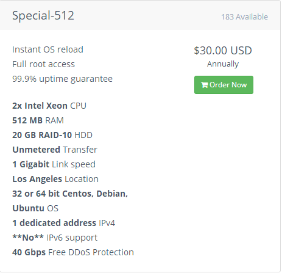
下面是主机测速 国内速度还行 基本够用了 网络浮动在2mb/s—-600mb/s之间
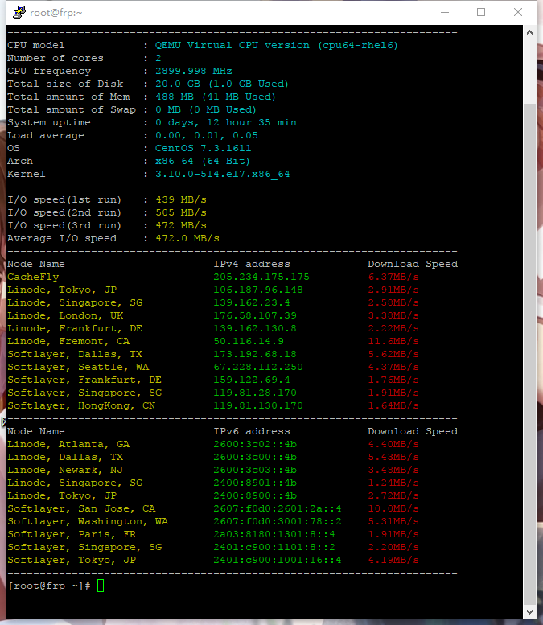
安装linux 这个 控制面板自动安装 你手动也行
选购域名
这个东西 自己想买就买 不想买就算了 没多大影响
买一个域名 设置解析 泛解析 *.xxxx.com （不一定要com域名） 或者设置一个二级域名abcd.xxx.com 解析到你的主机的ip上
好了现在也就完成了！
安装putty 这里用xshell也行 由于用的系统是linux 基本都用不到图形化界面管理 用ssh即可或者其他
这里用putty连接服务器！
下载putty 百度上搜索
安装
然后在你的开始界面找到putty （也就是这个东西 ）单击打开
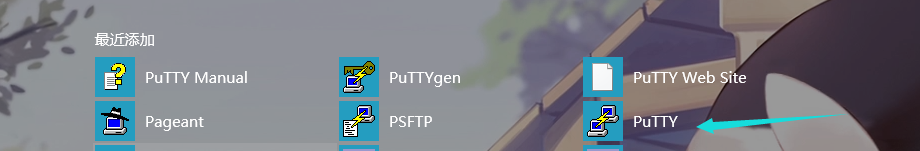
填写你的ip地址或者域名！
点击open 连接
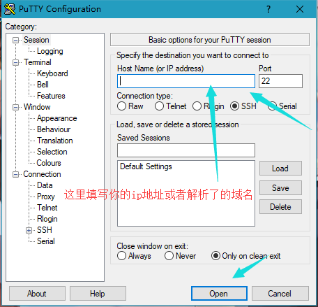
首次连接的时候会弹出提示，点击是。
输入账号密码 回车确认
之后输入用户名root，输入密码（VPS的密码，就是被小眼睛盖住的那里），注意在输入密码的时候是不会显示的，但是实际上是已经输进去了，输好后直接回车。方便的做法是在小眼睛旁边有个复制，之后再putty点击一下右键粘贴上了。
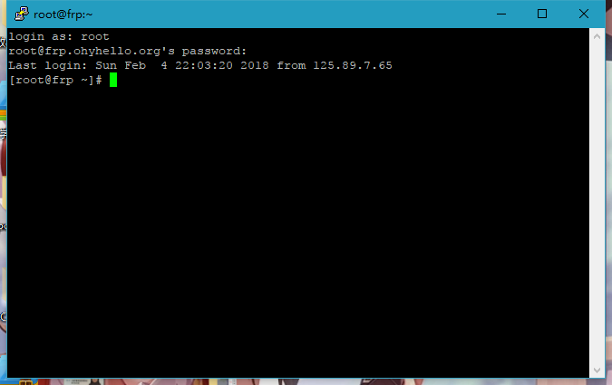
准备工作完成后现在可以开始安装frp了
#frp
frp中文官方地址 https://github.com/fatedier/frp/blob/master/README_zh.md 英文版：https://github.com/fatedier/frp
这里用frp的v0.16.0来演示
选择对应的端 frps是服务端 frpc是客户端都在对应版本里
<span style="font-family:Microsoft YaHei;">https://github.com/fatedier/frp/releases</span> 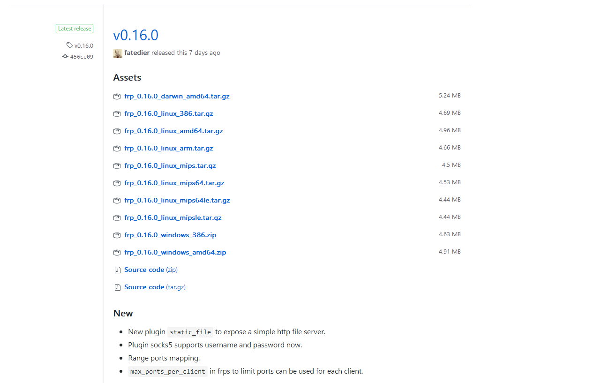
##下载frp
sudo wget
https://github.com/fatedier/frp/releases/download/v0.16.0/frp_0.16.0_linux_amd64.tar.gz##解压frp
sudo tar xvf frp_0.16.0_linux_amd64.tar.gz解压完如下
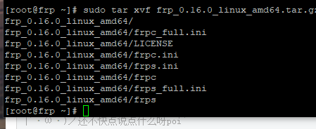
进入文件夹
cd frp_0.16.0_linux_amd64frp文件概念存在于说明文档中
##修改frps.ini
修改 frps.ini 文件，这里使用了最简化的配置：
#frps.ini
[common]
bind_prot = 7000输入以下指令 修改成如下
vi frps.ini[common]
bind_addr = xxx.xxx.xxx.xxx
bind_port = 7000
vhost_http_port = 80
vhost_https_port = 443
dashboard_port = 7500
dashboard_user = 你的仪表盘用户名
dashboard_pwd = 你的仪表盘密码
auth_token = frp若要添加http 或者https 映射 记得添加如下 如需添加ssh监控 请参考下方 这是完整的
[ssh]
listen_port = 6000
auth_token = frp
[http]
type = http
custom_domains = test1.a.com
auth_token = frp
[https]
type = https
custom_domains = test2.a.com
auth_token = frp修改完frps.ini后启动frp
./frps -c ./frps.ini[/code]下面是启动成功图像
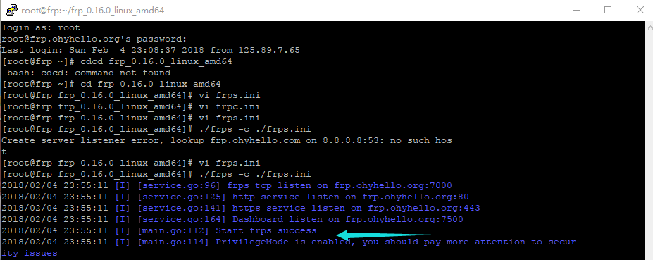
##下面是客户端：
下载这个 这里用Windows客户端来演示
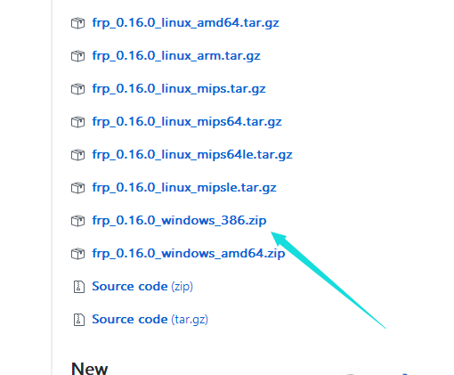
然后配置frp.ini
[code][common]
server_addr = xxx.xxx.xxx.xxx //服务器地址
server_port = 7000
local_ip = 127.0.0.1
[ssh]
type = tcp
local_port = 22
remote_port = 6000
[www]
type = http
local_port = 80
custom_domains = www.ohyhello.org/ 若启用了泛域名*.ohyhello.org则这样设置 若启用二级域名请看下面
auth_token = frp
[wwws]
type = https
local_port = 443
custom_domains = www.ohyhello.org
auth_token = frp
[ohy]
type = http
local_port = 80
custom_domains = project.ohyhello.org
auth_token = frp
[project]
type = https
local_port = 443
custom_domains = project.ohyhello.org
auth_token = frp##提醒：若多个自定义域名解析，切记[]里的名字要不同
接着启动客户端
用cd指令进入frpc的文件夹然后输入
frpc.exe -c frpc.ini
或者 直接打开cmd 输入cmd /c "D:frpsfrps.exe（你的客户端解压位置）" -c frps.ini
linux启动 ./frpc -c ./frpc.ini然后用自定义域名访问试试，看看能不能解析到你的本地网站
到此就完事了，frp的功能还不仅于此。仔细阅读官方文档，你会发现它不仅可以将本地网站映射到外网，还可以用作反向代理、自定义DNS服务器等等，功能非常强大。
接下来是二级泛域名解析
设置跟上面一样的但是有一点不同
###首先 解析域名
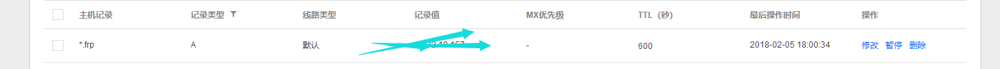
#这个是官方给的说明
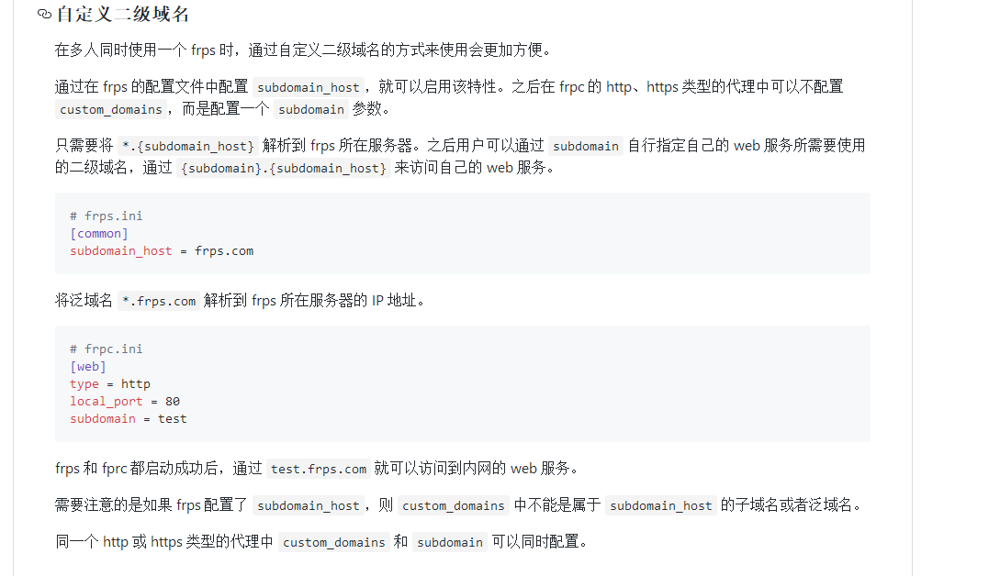
做就行了
首先 先修改服务端上的 frps.ini
在下面新增
subdomain_host = frp.ohyhello.com这个改成你的泛域名（二级)
然后客户端的frpc.ini新增
如下
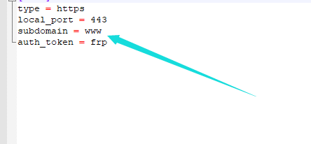
记得删除
custom_domains = www.ohyhello.org这个很重要 不然会冲突
然后你可以通过{subdomain}.{subdomain_host} 来访问自己的 web 服务。
启动服务这个是连接成功的图片
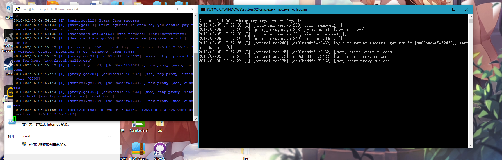
这个是本地web
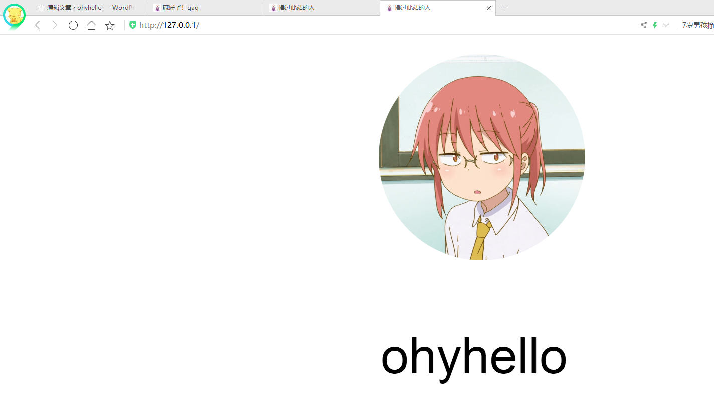
内网穿透后的 域名已经可以直接访问了 线路是 用户→服务端→内网主机
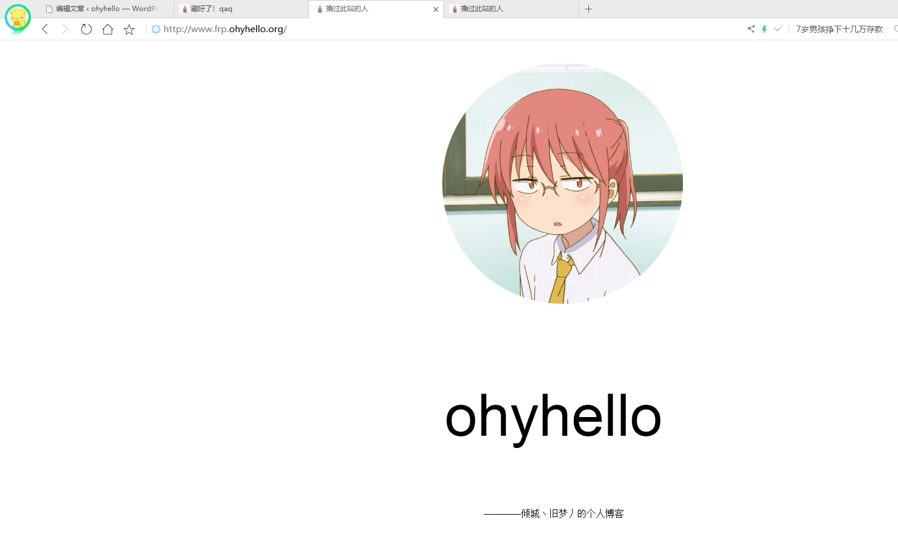
当然你可以吧域名解析到泛域名上 这样就可以建站了
这个是后台 你可以清楚的看见使用情况
进入办法：你的ip或者域名+你设置的端口默认7500
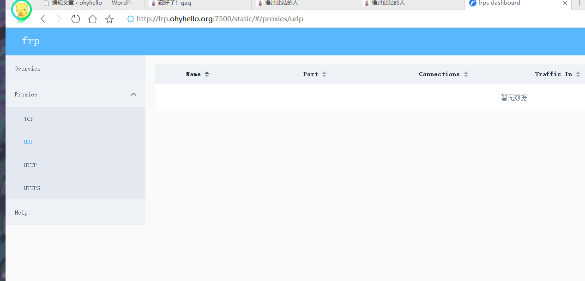
若要用域名解析到二级域名 也就是绑定域名 需要在frpc.ini里添加
custom_domains = prozero.ohyhello.org
然后把你的域名解析到二级域名上最后既可访问
例如 你的域名前缀是www
那么输入www.xxx.xxx.xxx就可以访问你的web 而你用xxx.xxx.xxx解析到www.xxx.xxx.xxx 需要添加上方代码进入对应地方 然后你输入www.xxx.xxx就可以正常访问你的web服务了
##相关链接：
frp更新列表
frp中文开发文档
frp英文开发文档
扩展
这个帖子我会慢慢写
以后会增加新的东西
目前可以扩展的就是搭建一个frp平台
户端可以编译成exe
然后 做一个前端出来对应你的frp服务器实行前端创建端口然后连接即可 可增加用户管理 以及权限 或者启用frp自带的验证系统 对应前端
或者你可以用一台主机分配端口 映射一台服务器上 开虚拟机 一台vps一般都不是开全端口的你可以利用你的外网主机端口穿透解析到虚拟机上的3389（远程）和重新分配一个域名到这台虚拟机的80端口 这样别人 访问你的自定义域名→frp域名→虚拟机→网站这样既可用一台主机开多台服务器
##补充：
Windows客户端（服务端）启动
先在对应的文件夹（frp程序的文件夹）里启动powershell或者cmd
输入以下代码即可启动
客户端：frpc.exe -c frpc.ini
服务端：frps.exe -c frps.ini <net — Feb 5, 2018
Made with ❤ and at Earth.